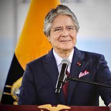

Guillermo Lasso (1955- )
Guillermo Lasso es un banquero y político ecuatoriano que asumió la presidencia
de Ecuador el 24 de mayo de 2021. Nacido el 16 de noviembre de 1955 en Guayaquil, Lasso ha
sido una figura prominente en la política ecuatoriana, habiendo ocupado varios cargos
públicos y empresariales a lo largo de su carrera. Como presidente, ha defendido políticas
económicas liberales y ha buscado promover la inversión extranjera y la reactivación
económica del país. Sus políticas han sido objeto de debate en el panorama político
ecuatoriano.
ANTERIOR